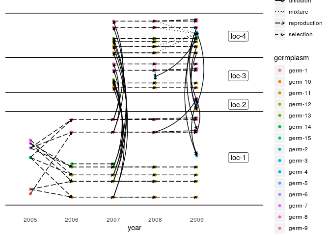
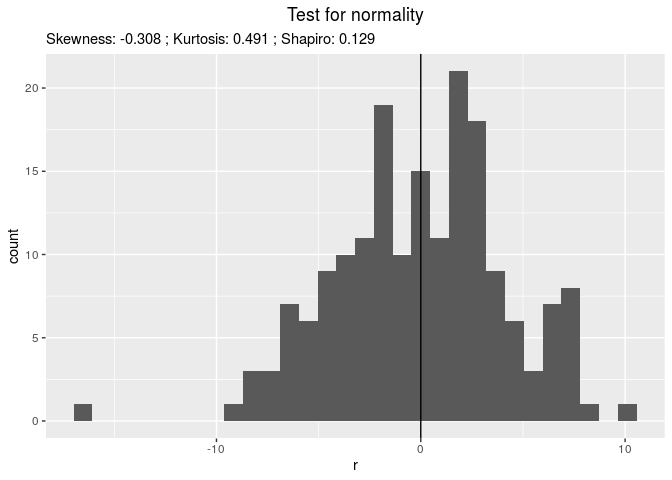
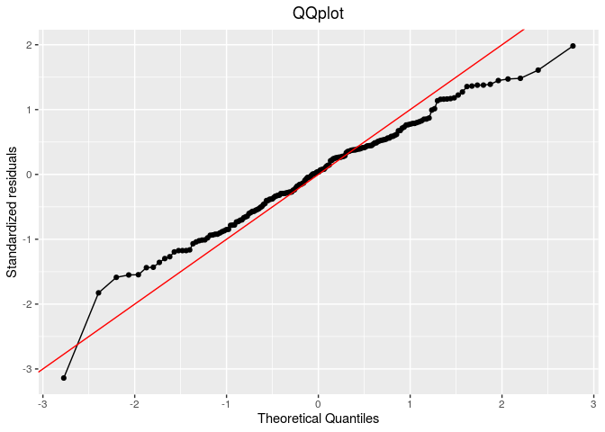
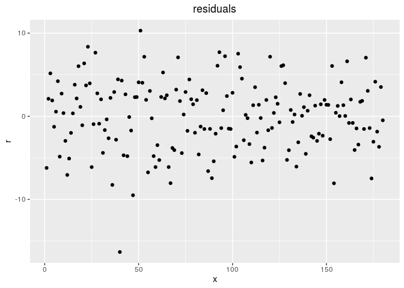
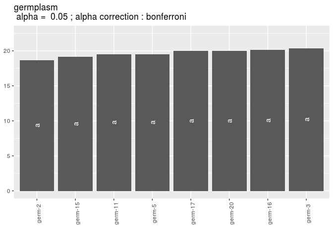
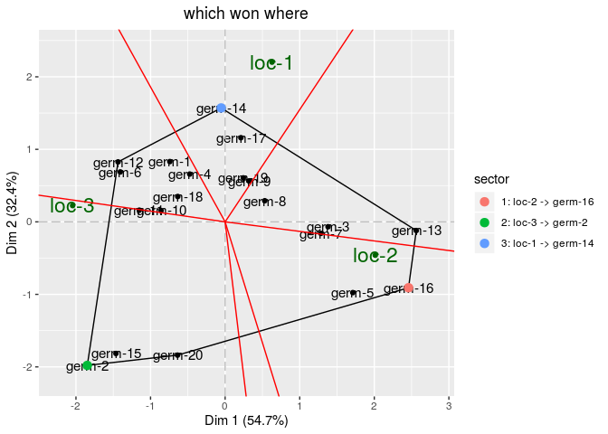
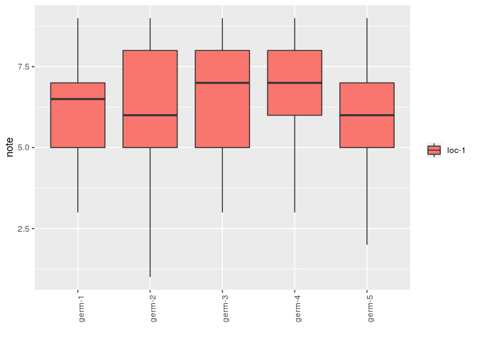
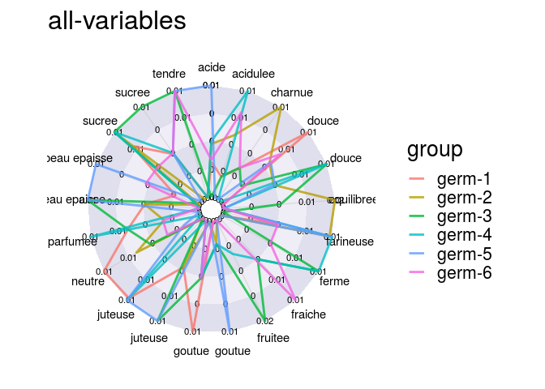

PPBstats is a freely available package based on the R software for Participatory Plant Breeding statisticial analyses. It performs analyses on the data collected during PPB programs at four levels:
The objectives of PPBstats are
Descriptive analysis can be done regarding:
Below an example on unipart network for seed lots analysis:
# get data
data(data_network_unipart_sl)
# format data for the package
net_unipart_sl = format_data_PPBstats(
type = "data_network",
data = data_network_unipart_sl,
network_part = "unipart",
vertex_type = "seed_lots")
# Display outputs
plot(net_unipart_sl, plot_type = "network", organize_sl = TRUE)
## [[1]]
## [[1]]$network
Other examples can be found in the book.
Statistical analysis can be done
Below an example on GGE model:
# get data
data(data_model_GxE)
# format data for the package
data_model_GxE = format_data_PPBstats(data_model_GxE, type = "data_agro")Once the data are formated, the model is run
Then, check it, for example with residuals
# check if the model went well
out_check_gge = check_model(out_gge)
p_out_check_gge = plot(out_check_gge)
p_out_check_gge$residuals
## $histogram


Then, compare means
# get mean comparisons
out_mean_comparisons_gge = mean_comparisons(out_check_gge, p.adj = "bonferroni")
p_out_mean_comparisons_gge = plot(out_mean_comparisons_gge)
p_out_mean_comparisons_gge$germplasm$`1`
Then, look at biplot
# get biplot
out_biplot_gge = biplot_data(out_check_gge)
p_out_biplot_gge = plot(out_biplot_gge)
p_out_biplot_gge$biplot$which_won_where
Sensory analysis can be done on
Below an example on hedonic analysis
# get data
data(data_hedonic)
# format data for the package
data_hedonic = format_data_PPBstats(data_hedonic, type = "data_organo_hedonic", threshold = 2)
# descriptive analysis
p_note = plot(data_hedonic, plot_type = "boxplot", x_axis = "germplasm",
in_col = "location", vec_variables = "note"
)
p_note$note$`germplasm-1|location-1`
descriptors = data_hedonic$descriptors
p_des = plot(data_hedonic, plot_type = "radar", in_col = "germplasm",
vec_variables = descriptors
)
p_des$`all-variables`
A model can also be run.
ppbstats@framalistes.org
Exchange information about the R package PPBstats
You can subscribe to this mailing list to have news on the R package PPBstats and share questions and remarks
Subscribe : https://framalistes.org/sympa/subscribe/ppbstats